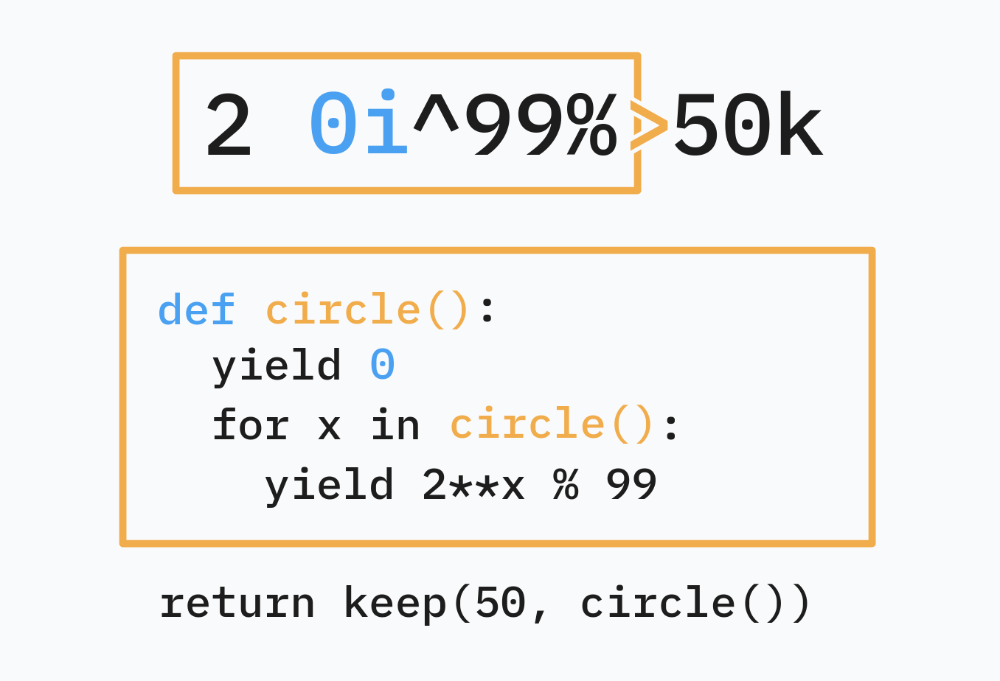

iogii is a statically typed language for code golf by darrenks, the creator of GolfScript and Nibbles. It features postfix notation, circular programming, and auto-vectorization.
1 Basics
1.1 Types and expressions
The basic types in iogii are int (arbitrary-precision integer) and char (Unicode character). Integers are specified using 0-9 and chars are specified using a preceding '. Some basic operators are given below:
| Operator | Type | Description |
|---|---|---|
+ |
int a → a or char int → char |
Add |
- |
a int → a |
Subtract |
* |
int int → int |
Multiply |
/ |
int int → int |
Divide |
% |
a int → int |
Modulo |
^ |
int int → int |
Power |
^ |
char char → int |
Subtract chars |
~ |
int → int |
Negate |
( |
a → a |
Predecessor (n-1) |
) |
a → a |
Successor (n+1) |
Expressions in iogii use postfix notation, and tokens may be separated by whitespace: 2 3^ calculates \(2^3\). There’s no way to write negative integer literals: use the ~ function instead.
1.2 A simple program
The simplest kind of program consists of one or more iogii expressions, whose results are all printed one after another. A line starting with # followed by a space is a comment.
This program prints -1860867j:
# Prints (-123)^3 followed by the successor of 'i'
123~3^'i)1.3 Lists
The other type of value in iogii is a list. All items in a list must have the same type.
We’ll call the “list of integers” type [int], and “list of list of chars” [[char]], and so on.
List literals may be written using commas between the items. Repeated commas are used to indicate nesting.
1,2,3is a list of integers.1,2,3,,4,5is a list of lists of integers: [[1, 2, 3], [4, 5]]'a,'β,'cis a list of characters (a string).5,is the list [5] of type[int].1,2,3,,4,5,, ,,6is the list [[1,2,3], [4,5], [], [6]] of type[[int]].'a,'b,,'c,'d,,,'e,'f,'gis the list [[“ab”, “cd”], [“efg”]] of type[[[char]]].
Some basic operations on lists include a (append), h (head), l (last), s (size). For a complete overview, see the Quick Reference.
1.4 Strings
A list of characters 'a,'β,'c can be written more briefly in double quotes: "aβc".
Inside double quotes, you can use \ to escape double quotes or other backslashes.
A closing " at the end of the program may be omitted.
1.5 Output formatting
Here’s how iogii prints values of different types:
| Type | Description | Example value | Output |
|---|---|---|---|
int |
Single number | 123 |
|
[int] |
List of numbers | 1,2,3 |
|
[[int]] |
Table of numbers | 11,2,,3,4,5 |
|
char |
Single character | 'a |
|
[char] |
String | "hiya" |
|
[[char]] |
List of strings | "two","words" |
|
[[[char]]] |
Table of strings | "ab","c",,"d" |
|
Further levels of nesting are represented using increasing number of blank lines between “layers”.
1.6 Truthiness
There is no boolean type in iogii. Values of any type may be “truthy” or “falsey”:
- An
intis falsey if it is zero. - A
charis falsey if it is null (\0) or ASCII whitespace (\t\n\v\f\r). - A list if falsey if it is empty.
The integers 0 and 1 are used to represent boolean outputs. For example, n (not) turns falsey inputs into 1 and truthy inputs into 0.
1.7 Default values
Some operations involve a type’s “default value”: this is 0 for int, space for char, and an empty list for list types.
For exampe, getting the head of an empty string (""h) returns a space.
2 Vectorization
A value’s rank is how many layers of list it’s in: int and char are rank 0, [int] and [char] rank 1, and so on.
When an operator is applied to an input that has higher rank than it expects, it will automatically apply to each element of that input, repeating this process until it reaches the expected rank.
# negate (~) has type int → int
5~
# negate each entry in a rank 1 list:
5,6,7~
# negate each entry in a rank 2 list:
5,6,7,,8,9~
# sum (_) has type [int] → int
1,2,3_
# sum each row:
1,2,3,,4,5,6_2.1 Pointwise application
When an operation with multiple inputs is vectorized, the operation is applied “pointwise” (element-by-element, like adding two vectors in math).
# Add an offset to a char:
'a2+
# ==> 'c
# Add offsets to string:
"abc"1,2,3+
# ==> "bdf"If one of the inputs is longer than the other, it is truncated to match.
# Still makes "bdf"
"abcde"1,2,3+
# Outputs: 11 22
# 44 55
10,20,,40,50,60,70 1,2,3,,4,5,,8,9+2.2 Broadcasting
If one of the inputs is lower-rank than the other, it is broadcasted (repeated) to match.
# Add the same offset to each char
"abc"2+
# ==> "cde"
# Add several offsets to the same char
'a8,14,6,8,8+
# ==> "iogii"2.3 Unvectorization
Sometimes, we don’t want this auto-vectorization behavior. For example, s (size) vectorizes until it finds rank-1 inputs, which means "hey","there"s gives us the size of each string, i.e. 3,5. What if we are interested in the number of strings, i.e. the size of the outer (rank-2) list?
To unvectorize an operator, we can put a comma after it. This will make it act on inputs of one higher rank. When the operator is a letter, we can capitalize it for the same effect.
# Both print 2
"hey","there"s,
"hey","there"SWe can unvectorize an operator multiple times: q (is equal?) compares units, Q compares lists, and Q, compares lists of lists, and so on.
2.4 Promotion
An input whose rank is too low for its operator will automatically be enclosed in a list of one element.
# o is "prepend default"
# 'x is promoted to "x", then becomes " x"
# 3 is promoted to [3], then becomes [0,3]
'xo3o2.5 Coercion
If an operation expects [char] but an int is provided, it will be converted to a string first.
# a is "append"
# 13 is coerced to "13", yielding "friday13"
"friday"13a3 Handling input
If your program is one argument short from a complete expression, it will parse some input from STDIN and use that. (If the interpreter is invoked with -- followed by arguments, those arguments are used as inputs instead.)
The input can be referred to explicitly using the keyword input. Properly golfed code can always find a way around such an explicit reference: for instance see the section on Missing values below.
3.1 Automatic parsing
If the input consists purely of digits, commas, and whitespace, it is parsed as a possibly nested integer list. Otherwise, it’s parsed as a string; if there are multiple lines, a list of strings.
For example, the iogii program ) will apply “successor” to the input. When the input is 99 this prints 100, but when the input is 99x it prints ::y (the successor of each char).
3.1.1 Raw mode
To prevent automatic parsing of the input, start the program with ,: this enables raw mode. The program ,) will turn even 99 into ::.
3.2 Missing values
Actually, iogii has a more complex mechanism for providing missing values. If parsing a program causes a “stack underflow”, i.e. some operator requires more operands than have been written, iogii will provide values as follows:
- The closest “missing value” to the start of the program is filled with the 🔴 input, as described above.
- Then, if there are 🔵 complete, separate expressions at the end of the source code, those are popped and used next.
- Finally, the variable 🟡
implicitis used. Initially, this is also bound to the input, but it can be changed contextually.
{kind=link}
3.2.1 Rotating programs
A useful consequence of this mechanism is that a program like 'x2input^k, containing a single reference to the input somewhere in the middle, can be rotated, moving the values before the input to the end and erasing input from the front.
^k'x2
# i.e. missing missing missing ^ k 'x 2
# = missing missing input ^ k 'x 2
# = 'x 2 input ^ k4 Reusing values
4.1 dup : and peek ]
The special operators : (dup) and ] (peek) repeat previous expressions:
a:is equivalent toa aa b]is equivalent toa b a
They make it easy to reuse previously computed values.
# This program turns "abcdefghijklmnop" into "pon-ponPON"
# (b = backwards, k = keep, U = uppercase)
b3k'-]:U4.2 Setting the implicit value >
In iogii, > acts like a “right bracket” in various situations. Its simplest use is to set the implicit value. In the code that follows >, any missing values that resolve to the implicit value will reuse the expression before >.
# Gets the length (s) of the input, and
# stores it as the implicit value.
# Then computes s*(2+s):
#
# s + * 2
# = missing missing s + * 2
# = implicit 2 s + *
# = s 2 s + *
#
s>+*2When resolving missing values after >, the “input” is the result of the previous subprogram s, not the value parsed from STDIN. In fact, after >, the result of the previous subprogram must be used: s>2 2+ causes an error.
4.3 mdup ;
A common pattern is to transform x into something like f(x)+g(x).
One way of achieving this in iogii is the special operator ;f, where f is a small function. This turns x into f(x) x, i.e. it duplicates the input like : but applies f to the first copy. We can then apply a different function to the second copy and combine the results: ;fg+ turns x into f(x)+g(x).
# input: n, output: (n-1)*(n+1)
;()*This meta-operator ; is called mdup. A small function is just a snippet of iogii code, where parsing stops at the earliest prefix that produces exactly one output. Thus ) and 2+ and 8 8^+ are valid small functions, but 2+3* is not one, as 2+ already leaves one output.
# input: n, output: (n-2)*(n+2)
;2-2+*4.4 mpeek !
The operator !f, where f is a small function, transforms x y into f(x) y x. The meta-operator ! is called mpeek.
Usefully, g!fh turns x y into f(x) g(y) h(x).
# input: n, output: (n-1)+2^(n+1)
2!()^+4.5 Assignment
For more complicated value reuse, iogii lets you assign values to named variables.
4.5.1 Using set and let
Let’s say we want to compute (foo+3)^3*(foo+4)^4 where foo is the length (s) of the input.
The long way to write this uses set foo, which stores the intermediate value without using it up, and then foo, which recalls it:
# Turns "ab" into (2+3)^3 * (2+4)^4 = 162000
s set foo 3+3^ foo 4+4^ *Equivalently, we can use let foo, which does use up the value.
s let foo
foo 3+3^ foo 4+4^ *4.5.2 Using =
The golf-y way to achieve the same thing uses =, which stores an intermediate value into an automatically-chosen variable name.
# Here, `=` saves the value into `A`.
s=3+3^A4+4^*The way iogii decides the variable name is a bit clever. This example from the official website is a good way to think about it:
If you use capital letter ops
A,CandWnow the largest gap is betweenCandWso the first use of=will save toD.
And it offers a trick for using iogii itself to discover which variable it decided to use:
CWA ===
# → ERROR: 1:6 (=) Sets register 'D' but it is never used5 Circular programming
We have a good idea now of how iogii handles functional programming concepts like map and zip, processing each element in a list in parallel. What about a fold or scan, making the elements of a list “talk to one another”?
iogii uses circular programming: defining data in terms of itself.
Here’s an example of circular programming in Python: defining a generator in terms of itself.
def powers():
yield 1
for x in powers():
yield 2 * x
# Prints: 1, 2, 4, 8, 16, 32, 64
for n in powers():
print(n)
if n > 50:
breakHere is a more complex example, showing how circular programming can perform a “scan”:
def cumulative_sum():
yield 0
for x, y in zip(cumulative_sum(), [1, 2, 3, 4]):
yield x + y
# Prints: 0, 1, 3, 6, 10
for n in cumulative_sum():
print(n)5.1 iterate i
One primitive for circular programming in iogii is iterate i.
It is special syntax that’s more or less common to all of iogii’s circular programming operators. It acts on a preceding argument, the initial value, but also on its scope, which is the subexpression it occurs in, demarcated by a closing bracket >.
It’s easier to explain the behavior of i by example. Let’s write an iogii program that iterates the function \(x \mapsto 2^x \bmod 99\) on starting value 0, and prints the first 50 numbers.

{kind=link}
2 0i^99%> to Python.In linked-list terms, 2 0i^99%> is an infinite list C whose head is 0 and whose tail is 2C^99%.
Another way to think about it is: C[0] is 0 and C[n] is (2**C%99)[n-1] i.e. 2**C[n-1]%99.
In general, ηiφ> is the infinite list C whose head is η and whose tail is φ(C).
5.1.1 Circular programming and vectorization
The cumulative sum “scan” example is easy to port as well, and it gives us an example of circular programming with vectorization:
# 4} is the range 1,2,3,4.
0i4}+>This makes the lazy list \(C\) whose head is \(0\) and whose tail is \(C+[1,2,3,4]\). In other words, due to vectorization, \(C[0] = 0\) and
\[ C[n] = (C+[1,2,3,4])[n-1] = C[n-1] + [1,2,3,4][n-1]. \]
Because vectorization stops at the end of the shortest of two lists, C is finite (its tail is as long as \([1,2,3,4]\) so it has length 5 itself).
5.2 Taking a finite result
The list defined by i needn’t be calculated in full before we can use it. Lists are lazy: their elements are calculated as needed.
# Start with 1, repeatedly double, and keep eight elements.
1i2*>8k
# ==> [1,2,4,8,16,32,64,128]Here k only asks for the first eight elements. The initial 1 counts as one of them, so only seven doublings are needed.
The order of operations matters. 1i2*>8k_ sums those eight elements and returns 255. Putting _ before 8k would ask for the sum of the entire infinite list. The later k cannot make that sum finite.
The same issue applies to s (size), l (last), and b (reverse): they need to reach the end of their list. Take a finite prefix first when using these operations on an infinite list.
5.2.1 Repetition
An even simpler infinite list is made by r (repeat):
7r5k
# ==> [7,7,7,7,7]There’s a special promotion rule for k. When its first argument is a scalar, it is repeated rather than enclosed in a singleton list. Thus 7 5k produces the same result.
This doesn’t mean that k pads an existing list. 1,2 5k still only returns [1,2].
5.2.2 Stopping at a condition
Sometimes we know when to stop, but not how many elements we’ll need. The operator w (takeWhile) takes a list of values and a list of conditions. It returns values up to, but not including, the first falsey condition.
# Keep powers of two while they are less than 100.
1i2*>:100<w
# ==> [1,2,4,8,16,32,64]After :, we have two copies of the powers of two. 100< turns the second into a list of comparisons: [1,1,1,1,1,1,1,0,...]. Then w uses those comparisons to choose where to stop.
The related operator v (filter) skips falsey entries and continues looking:
# Keep odd numbers.
1,2,3,4,5:2%v
# ==> [1,3,5]
# Stop at the first even number.
1,2,3,4,5:2%w
# ==> [1]Both operations pair values with conditions and stop if either list ends. But only w stops at a falsey condition. Replacing w with v in the powers-of-two example would print the same seven numbers, then continue searching forever for another power below 100.
5.3 expand e
For a cumulative sum, we often want the sums without the initial zero. We can remove it using t (tail):
0i1,2,3,4+>t
# ==> [1,3,6,10]The operator expand e provides a shorter way:
e1,2,3,4+>
# ==> [1,3,6,10]Unlike i, e takes no initial argument. It uses the element type’s default value and leaves that initial value out of the result.
For integer results, think of the value available inside the scope as [0] followed by the result being defined. If the result is R, this example says:
\[ R = ([0] \mathbin{\text{ followed by }} R) + [1,2,3,4]. \]
The first addition is 0+1, the next is 1+2, and so on. The finite list on the right limits R to four elements.
# Starting after the default 0, repeatedly add 1.
e)>6k
# ==> [1,2,3,4,5,6]
# Starting after the default 0, repeatedly double.
e2*>6k
# ==> [0,0,0,0,0,0]The second example is a reason to choose the initial value deliberately. e is convenient for sums, but 1i2*> is what we need for powers of two.
5.4 Referring to the circular value
Inside an iteration, $ explicitly refers to the value provided by the currently enclosing function. For i, this is the list being defined, not just its most recent element. Vectorization is what makes ordinary arithmetic act on successive elements of that list.
# C starts at 0; each next element is (previous+1)+previous.
0i)$+>6k
# ==> [0,1,3,7,15,31]Inside the scope, ) gives C+1, $ supplies C again, and + adds the two pointwise. So the recurrence is \(C[n+1] = 2C[n]+1\).
We can omit $ here:
0i)+>6k
# ==> [0,1,3,7,15,31]The missing operand of + is supplied by the enclosing iteration. Writing $ first can make such a program easier to understand before shortening it.
5.4.1 When > is omitted
If an iteration has no matching >, the parser closes it as soon as a subsequent operation combines the iteration value into a single result. Further operations are outside that scope.
# The first ) closes the iteration; the second ) adds 1
# to every element of the resulting list.
0i))6k
# ==> [1,2,3,4,5,6]
# Both successors are inside the iteration.
0i))>6k
# ==> [0,2,4,6,8,10]In the first program, the iteration itself is [0,1,2,3,...]. In the second, each step adds two. A closing > can therefore change the result even when the program was already valid without it.
5.5 Right folds f
What if we only want the total sum? We already know how to calculate cumulative sums:
0i1,2,3,4+>
# ==> [0,1,3,6,10]Take the last result with l to get the final sum:
0i1,2,3,4+>l
# ==> 10A right fold f is a short way to do this, but it combines the elements from right to left. It takes an initial value for the end of the list:
# Add the numbers, using 0 as the initial value: (((0+4)+3)+2)+1
0f1,2,3,4+>
# ==> 10
# Multiply the numbers, using 1 as the initial value.
1f1,2,3,4*>
# ==> 24For these element-by-element calculations on finite lists, f gives the same result as iterating over the reversed input and taking the last result. The reason it seems to process the list in reverse is that it actually works a bit differently from i, so as to support lazy computations, as we’ll see below.
How 0f10,20,30,40+> actually works is that it returns the head of a list like this:
\[ R = (\text{tail}(R) + [10,20,30,40]) \text{ padded by 0s} \]
Through vectorization, this leads to the equations…
R[0] = R[1] + 10
R[1] = R[2] + 20
R[2] = R[3] + 30
R[3] = 0 + 40The value returned is R[0], which is 100.
Some equivalent Haskell (as Python is insufficiently lazy to port this example):
-- This is like `a ++ repeat v`, but written in a subtly different way
-- that produces `something : something` before ever evaluating `a`, which
-- lets Haskell evaluate the result below without infinitely recursing.
pad :: [a] -> a -> [a]
pad a v = h : pad t v
where (h,t) = if null a then (v,[]) else (head a,tail a)
r :: [Integer]
r = pad (zipWith (+) (tail r) [1,2,3,4]) 0
main = print $ r!!05.5.1 Argument order matters
As with iteration, the placement of the “initial value + f” construct within its scope can vary.
1,2,3 0f->
# ==> 2Now we get the first element of this list:
\[ R = ([1,2,3] - \text{tail}(R)) \text{ padded by 0s} \]
Essentially, we’re supplying the function \([1,2,3] - \square\) to this “fold formula.”
Through vectorization, this leads to the equations…
R[0] = 1 - R[1]
R[1] = 2 - R[2]
R[2] = 3 - 0The result is \(R[0] = 1-(2-(3-0)) = 2\).
5.5.2 Empty lists and default initial values
The literal nil denotes an empty list. If there are no elements to combine, f returns its initial value:
17f nil +>
# ==> 17The operator m (meld) is the default-value version of a right fold. It takes no initial argument:
m1,2,3,4+>
# ==> 10
m1,2,3,4*>
# ==> 0For integers, that default is 0. As with e, the default isn’t necessarily the identity for the operation: use 1f for a product.
5.5.3 Right folds and laziness
Combining from right to left doesn’t mean that f must visit the last element first. It only needs to calculate the later result if the current operation uses it. This lets a right fold return an answer even for an infinite list.
As a (contrived) example, let’s find the first nonzero number in {, the infinite list [0,1,2,...]. The operator y (ifElse) takes a condition and two alternatives: it returns the first alternative when the condition is truthy, and the second otherwise. It only evaluates the selected alternative.
# Use each number as both the condition and the first alternative.
{ : 0f y>
# ==> 1The : duplicates the list. Inside f, y receives the current number as its condition and first alternative, and the folded result of the remaining numbers as its second alternative. So at each position, the rule is: return this number if it’s nonzero; otherwise use the later result.
R[0] = if 0 then 0 else R[1]
R[1] = if 1 then 1 else R[2]
R[2] = if 2 then 2 else R[3]
R[3] = ...R is infinite, but we can compute R[0] lazily regardless: it evaluates to R[1], which evaluates to 1.
6 Controlling the rank of a calculation
So far, our circular values have mostly been lists of integers. A list of lists introduces two distinct possibilities: several independent calculations, or one calculation whose state is itself a list.
6.1 Several scans at once
Ordinary i can vectorize over a list of lists:
0i1,2,,3,4+>
# ==> [[0,1,3],[0,3,7]]Each row gets its own cumulative sum, starting at 0. The outer list selects which scan we’re doing; the inner list contains its successive results.
6.2 A list as the state
To make one iteration whose initial value is a whole list, use I, or equivalently i,. One element of the resulting sequence is then a list.
For example, we can calculate Fibonacci numbers by keeping two consecutive numbers as the state. The initial state is [0,1], and the update is:
[a,b] → [b,a+b]Here’s the complete program:
0,1I;t _ j a>8K
# ==> [[0,1],[1,1],[1,2],[2,3],[3,5],[5,8],[8,13],[13,21]]The spaces aren’t required, but help separate the operations. Inside the scope, each operation acts on the sequence of states:
| Code | Effect |
|---|---|
;t |
Keep a copy of the states, with t applied to the first copy: each [a,b] becomes [b]. |
_ |
Sum each pair in the second copy, giving a+b. |
j |
Enclose each sum in a singleton list, giving [a+b]. |
a |
Append the corresponding lists: [b] and [a+b] become [b,a+b]. |
The small function after ; is just t. The sum and append happen after that small function has closed, but remain inside the iteration closed by >.
Notice the uppercase K at the end. The result has type [[int]], and we want eight states. Lowercase k would instead keep up to eight integers within each state, leaving the sequence of states infinite.
To extract the Fibonacci numbers, take the head of each state:
0,1I;t _ j a>8K h
# ==> [0,1,1,2,3,5,8,13]This time lowercase h is deliberate: it acts on each pair. Uppercase H would take the first pair from the outer list.
6.3 Building the right nesting
The same distinction applies to j (just) and r (repeat):
# Enclose each integer separately.
1,2j
# ==> [[1],[2]]
# Enclose the whole list.
1,2J
# ==> [[1,2]]
# Repeat each integer; keep three from each repetition.
1,2r3k
# ==> [[1,1,1],[2,2,2]]
# Repeat the whole list; keep three copies.
1,2R3K
# ==> [[1,2],[1,2],[1,2]]Rank determines which value is treated as one element. It’s useful to write down the types of intermediate values when a program produces the right numbers with the wrong nesting.
6.4 Broadcasting across rows or columns
Adding a vector to a matrix has a subtle default:
10,20,,30,40 1,2+
# ==> [[11,21],[32,42]]The first offset, 1, is added to every entry of the first row. The second offset, 2, is added to every entry of the second row.
Both operands of + are expected to be scalars. At the outermost level, the first row is paired with 1, and the second row with 2. Within each pair, the scalar is repeated to match the row.
To add [1,2] to each row, repeat the whole offset list explicitly:
10,20,,30,40 1,2R+
# ==> [[11,22],[31,42]]Now both arguments are lists of rows. Corresponding rows are paired first, then corresponding integers within them. The infinite repetition is harmless here: addition stops when the finite matrix ends.
7 Reading types and overloaded operators
7.1 Inspecting intermediate values
Two long-name operators are useful while developing a program:
showconverts an entire value to a string showing its structure, including brackets and quotes.typereturns its inferred type as a string.
Neither auto-vectorizes. They describe the whole value:
1,2,,3 show
# Prints: [[1,2],[3]]
1,2,,3 type
# Prints: [[int]]The # ==> comments in this part of the guide use this structural notation. Normal output still uses the formatting described under Output formatting. To see structural output for every result when running the downloaded Ruby interpreter, use its -p option:
ruby iogii/src/main.rb -p example.iogshow must examine the value to describe its contents. Take a finite prefix before showing an infinite list. type only needs the inferred type:
1i2*> type
# Prints: [int]7.2 Short and long names
In golf, and in this guide, we’ve used short names like h instead of long names like head. These short names have overloads selected by type and rank.
5h
# ==> 32
5,6h
# ==> 5It doesn’t make sense to take the head of an integer, so on a scalar integer, h means powOf2. On a list of integers, it means head.
Use a long name to make the intended operation explicit while working:
5 powOf2
# ==> 32
5,6 head
# ==> 5This also reveals a limit of automatic promotion. head does not promote a scalar: 5 head is a rank error. If a singleton list is what we want, we can make it explicitly with j.
The interpreter first selects compatible operations and solves the types and ranks of the whole expression, including circular dependencies. Evaluation then calculates the values those operations produce. When a short program is surprising, checking type, using long names, and making > explicit helps distinguish an operation-selection problem from an unexpected recurrence.